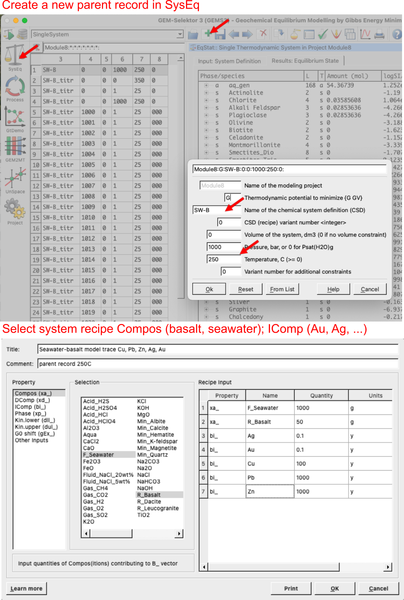
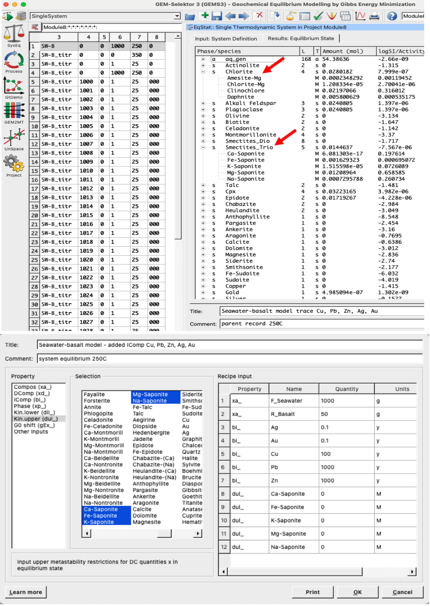
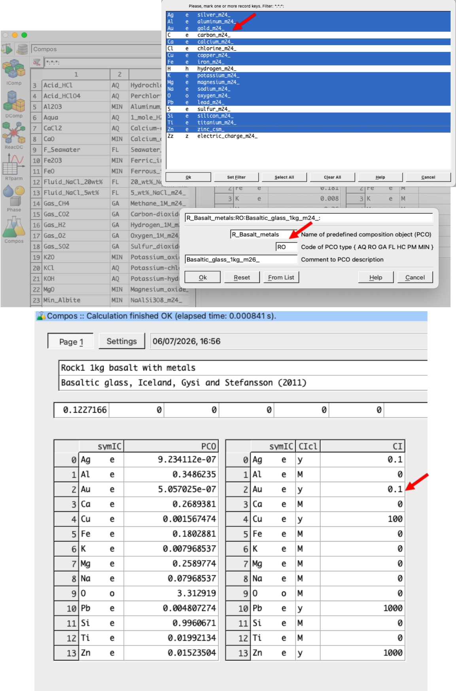
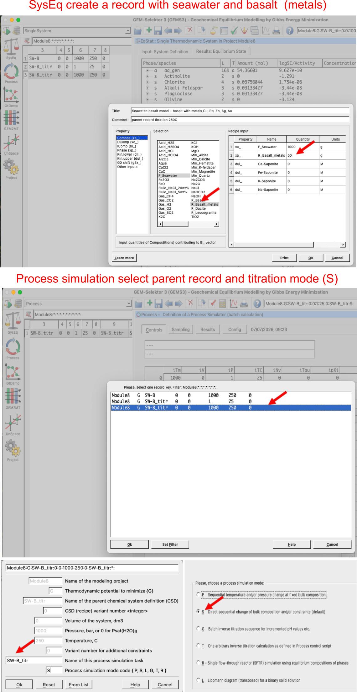
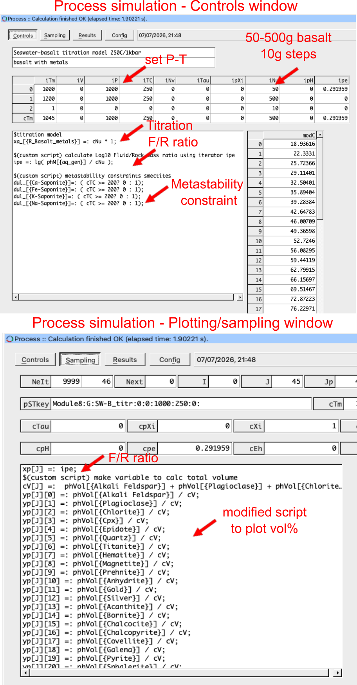
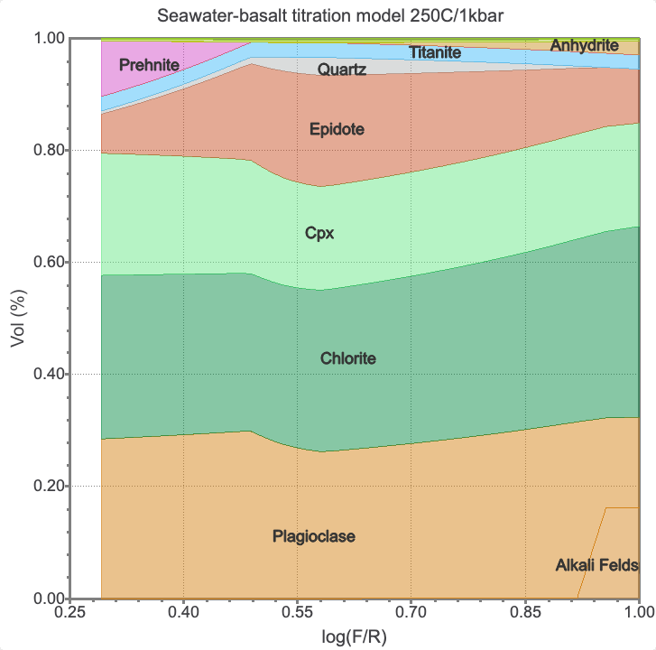
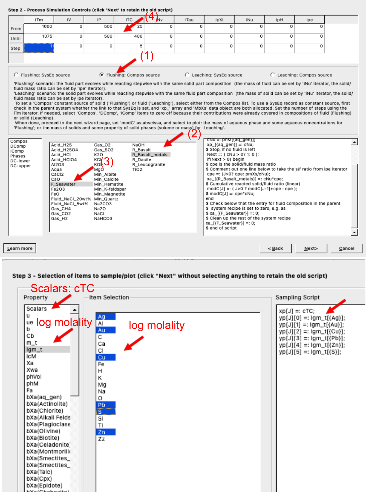
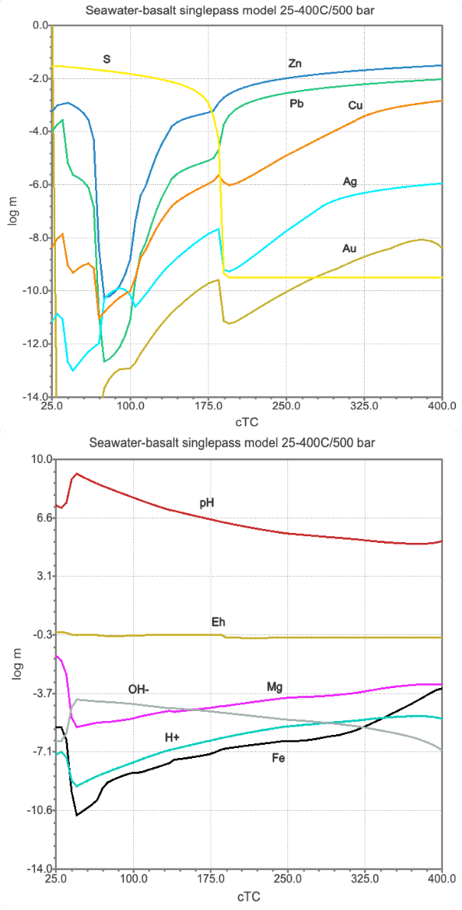

8 Seawater-basalt recharge zone at Volcanogenic Massive Sulfide (VMS) Deposits
Volcanogenic Massive Sulfide (VMS) deposits occur as ancient seafloor ore bodies rich sulfides containing copper, zinc, lead, gold, and silver. These deposits are thought to have formed close to hydrothermal vents, which are found at mid-ocean ridge and back arc basins. The hydrothermal fluids are thought to be derived from oxidized sulfate (\(\text{SO}_4^{2-}\)) seawater that has circulated through the oceanic crust and reacted with the basaltic rocks with the sulfur reduced to sulfides.
Base and precious metals are leached from the basaltic rocks and precipitated as sulfides in the seafloor. There are several zones that can be distinguished in the formation of VMS deposits, including the seawater recharge zone, the hydrothermal fluid flow zone, and the seafloor deposition zone.
In this module, we will focus on the seawater recharge zone and model the interaction of seawater with basalt at elevated temperatures and pressures, simulating the conditions found in the subsurface near hydrothermal vents. The model we will setup includes a titration model to study the porosity evolution with reaction progress. The model will also include the formation of secondary minerals, such as smectites and chlorite, which can affect the porosity and permeability of the rock. Then we will setup a single pass cooling model to study the mobility of base and precious metals including Cu, Pb, Zn, Ag, and Au. The model will also include the formation of sulfide minerals, such as pyrite, galena, sphalerite, and chalcopyrite, which can affect the metal mobility and deposition near the seafloor.
![Schematic of a VMS deposit showing the seawater recharge zone, the hydrothermal fluid flow zone, and the seafloor deposition zone. The seawater recharge zone is where seawater infiltrates the oceanic crust and reacts with basaltic rocks, leading to the formation of hydrothermal fluids that eventually precipitate metals as sulfides on the seafloor. Modified from Hurtig, N. C., Gysi, A. P., Monecke, T., Petersen, S., & Hannington, M. D. (2024). Tellurium transport and enrichment in volcanogenic massive sulfide deposits: Numerical simulations of vent fluids and comparison to modern sea-floor sulfides. Economic Geology, 119(4), 829-851.](figures/module8/fig-1.png)
Figure 8.1: Schematic of a VMS deposit showing the seawater recharge zone, the hydrothermal fluid flow zone, and the seafloor deposition zone. The seawater recharge zone is where seawater infiltrates the oceanic crust and reacts with basaltic rocks, leading to the formation of hydrothermal fluids that eventually precipitate metals as sulfides on the seafloor. Modified from Hurtig, N. C., Gysi, A. P., Monecke, T., Petersen, S., & Hannington, M. D. (2024). Tellurium transport and enrichment in volcanogenic massive sulfide deposits: Numerical simulations of vent fluids and comparison to modern sea-floor sulfides. Economic Geology, 119(4), 829-851.
8.1 Calculate the seawater-basalt equilibrium at elevated temperatures and pressures
The seawater and basalt compositions are taken from the MINES database, and can be inspected in the Thermodynamic database mode. The seawater composition is based on the standard seawater composition, and the basalt composition is based on a typical mid-ocean ridge basalt (MORB) composition. The major problem with these models is the kinetics and possibly the thermodynamic properties for some of the minerals and/or aqueous species that need to be updated. Typically, this results in some minerals that should form at high temperature that stabilize in the model at temperatures much lower than these occur in natural systems. Here we will learn how to add a metastability constrain to deal with these phases, and allow metastable phases to form instead of the thermodynamically stable phases. A typicall example would be modeling of chalcedony/quartz and smectites/chlorite stability.
- The first step is to prepare a record in
SysEqto calculate the equilibrium between seawater and basalt at elevated temperatures and pressures. Create a new record inSysEq, call itSW-Band select the seawater and basalt compositions from the MINES database. Set the temperature to 250 \(^{\circ}\)C and the pressure to 1 kbar, which are typical conditions found in the subsurface near hydrothermal vents. For the input recipe use 1000 g seawater and 50 g basalt; to spice things up we will add 0.1 ppm Ag and Au, 100 ppm Cu and 1000 ppm Zn and Pb to the system composition. The record is shown in Fig. 8.2. We then calculate the equilibrium and inspect the results.

Figure 8.2: SysEq window showing how to create a new parent record. Select basalt and seawater from the MINES thermodynamic database, listed under Compos, and select base and precious metals under IComp and add the respective concentrations.
- The results show that the seawater-basalt reaction is dominated by the formation of secondary minerals, such as phyllosilicates (chlorite, smectites), epidote, anhydrite, and the metals precipitate into sulfides such as sphalerite, galena, chalcocite. Now we can try to add a metastability contrain to avoid forming smectites at this temperature. We open the
Recipe dialog(yellow vial) and select `Kin.upper (dul_), since the smectites are solid solutions we need to select all saponite endmembers and add 0 M. See Fig. 8.3 for more details. Then re-calculate equilibrium to check what happens when smectites are “switched off”.

Figure 8.3: SysEq window showing the modeling results for basalt alteration minerals (top) and the input recipe window (yellow vial) to add kinetic metastability constrain Kin.upper(dul_) for saponite (bottom).
8.2 Clone and create a basalt PCO with metals (Cu, Pb, Zn, Ag, and Au)
The seawater and basalt compositions are taken from the MINES database, and can be inspected in the Thermodynamic database mode. We will now add base and precious metals to the basalt composition.
Switch to
Thermodynamic databasemode, and underComposselect R_Basalt andClonethis record and call it “R_Basalt_metals”. Make sure to select Cu, Pb, Zn, Ag, and Au in the next window (Fig. 8.4).Add 0.1 ppm Ag and Au, 100 ppm Cu and 1000 ppm Zn and Pb. In the normalization amount field you can add a zero, then re-calculate, it should then generate the outputs shown in Fig. 8.4. Note if you go in the
Settingstab you can inspect the basalt composition, underPage 1tab you see the base and precious metals entered as independent components (IComp).

Figure 8.4: Setup of a PCO in Compos in thermodynamic database mode showing how to create/clone the basaltic rock and add base and precious metals to its input comosition. Make sure to select the independent components (IComp) as shown in the top window, and add the amounts and units in the first tab on Page 1. Choose 0.1 ppm Au and Ag, 100 ppm Cu, and 1000 ppm Pb and Zn.
8.3 Seawater-basalt titration model and porosity evolution
Before we dive into any open system modeling, let’s have a look at a titration model. The goal is to titrate 50 to 500 g of basalt in 10 g steps to 1000 g of seawater and inspect the evolving alteration mineralogy. We will create a custom script to track volume percent minerals (vol%) as a function to fluid/rock ratios (F/R). High F/R ratios represent the core of the upflow/recharge zone where the fluid completely dominates and leaches the rock. Low F/R ratios (high basalt mass) represent the fresh rock matrix far from the conduit.
- To begin we create a parent record in
SysEqwith the basalt and seawater, then we move on to theProcess simulationmode (left panel of GEMS) and create a new record. Make sure to select the parent record you just created, call it “SW-B_titr” and select the titration model, which is calledS mode(Fig. 8.5).

Figure 8.5: Top shows the parent record created in SysEq with seawater and basalt added. The bottom window shows the selection of this parent record when creating a new record in the Process simulation mode for the titration model (S mode).
The next window show the tiration model setup (Fig. 8.6), make sure to enter these numbers and select the correct model. The number 1 problem I encounter is when someone forgets to add a reasonable pressure in the pressure cell. Click next and select the variables to plot (Fig. 8.6). For now we choose cNu which is g rocks titrated, and phVol which is volume of each mineral in cm3.
Click your way through the wizard until step 4 and make sure to tick
Volume V, I ('vV')for allocating an optional data vectors (Fig. 8.6). What this does, it frees up a variable in which we will save the sum or total volume of each of our minerals. Click next. Make sure to save this record.
![(Step 2) Titration model setup in `S mode` in the `Process simulation` mode. Make sure to (1) select the correct model, (2) select the titrant, here we use basalt, (3) select the initial, final and steps of basalt to be added, (4) add the correct pressure and temperature (here we use a constant P-T, but steps and gradients can be scripted). (Step 3) Variables to be selected for plotting, here we choose first `Scalars`, right click and choose abscissa for cNu which is grams rock added, then switch to `phVol` to select phase volumes in cm3. (step 4) Tick `Volume V, I ('vV')` for allocating an optional data vectors](figures/module8/fig-6.png)
Figure 8.6: (Step 2) Titration model setup in S mode in the Process simulation mode. Make sure to (1) select the correct model, (2) select the titrant, here we use basalt, (3) select the initial, final and steps of basalt to be added, (4) add the correct pressure and temperature (here we use a constant P-T, but steps and gradients can be scripted). (Step 3) Variables to be selected for plotting, here we choose first Scalars, right click and choose abscissa for cNu which is grams rock added, then switch to phVol to select phase volumes in cm3. (step 4) Tick Volume V, I ('vV') for allocating an optional data vectors
The next step is to click on the calculator to test our calculation. Check the
Resultstab and you can plot the results which should display volume minerals as a function of mass of basalt added.Now let’s take it a step further, and create a custom script (copy paste them from below). If you want you can clone the record you made earlier and rename it to test the custom script. I made this one for you, try it out. Copy paste the scripts below; one is for the the
Controlswindow/tab, here we want to create a variable calledipewhich captures the logarithm of fluid/rock ratio (F/R). We move then to theSamplingtab to update our x-axis to plot the F/R ratio and y-axis to plot mineral volume %. Fig. 8.7 shows how your script window should look like.Script for
Controlswindow:
$titration model
xa_[{R_Basalt_metals}] =: cNu * 1;
$(custom script) calculate Log10 Fluid/Rock mass ratio using iterator ipe
ipe =: lg( phM[{aq_gen}] / cNu );
$(custom script) metastability constraints smectites
dul_[{Ca-Saponite}]=: ( cTC >= 200? 0 : 1);
dul_[{Fe-Saponite}]=: ( cTC >= 200? 0 : 1);
dul_[{K-Saponite}]=: ( cTC >= 200? 0 : 1);
dul_[{Na-Saponite}]=: ( cTC >= 200? 0 : 1);- Script for
Samplingwindow:
xp[J] =: ipe;
$(custom script) make variable to calc total volume
cV[J] =: phVol[{Alkali Feldspar}] + phVol[{Plagioclase}] + phVol[{Chlorite}] + phVol[{Cpx}] + phVol[{Epidote}] + phVol[{Quartz}] + phVol[{Titanite}] + phVol[{Hematite}] + phVol[{Magnetite}] + phVol[{Prehnite}] + phVol[{Anhydrite}] + phVol[{Gold}] + phVol[{Silver}] + phVol[{Acanthite}] + phVol[{Bornite}] + phVol[{Chalcocite}] + phVol[{Chalcopyrite}] + phVol[{Covellite}] + phVol[{Galena}] + phVol[{Pyrite}] + phVol[{Sphalerite}];
yp[J][0] =: phVol[{Alkali Feldspar}] / cV;
yp[J][1] =: phVol[{Plagioclase}] / cV;
yp[J][2] =: phVol[{Chlorite}] / cV;
yp[J][3] =: phVol[{Cpx}] / cV;
yp[J][4] =: phVol[{Epidote}] / cV;
yp[J][5] =: phVol[{Quartz}] / cV;
yp[J][6] =: phVol[{Titanite}] / cV;
yp[J][7] =: phVol[{Hematite}] / cV;
yp[J][8] =: phVol[{Magnetite}] / cV;
yp[J][9] =: phVol[{Prehnite}] / cV;
yp[J][10] =: phVol[{Anhydrite}] / cV;
yp[J][11] =: phVol[{Gold}] / cV;
yp[J][12] =: phVol[{Silver}] / cV;
yp[J][13] =: phVol[{Acanthite}] / cV;
yp[J][14] =: phVol[{Bornite}] / cV;
yp[J][15] =: phVol[{Chalcocite}] / cV;
yp[J][16] =: phVol[{Chalcopyrite}] / cV;
yp[J][17] =: phVol[{Covellite}] / cV;
yp[J][18] =: phVol[{Galena}] / cV;
yp[J][19] =: phVol[{Pyrite}] / cV;
yp[J][20] =: phVol[{Sphalerite}] / cV;
Figure 8.7: Process simulation mode with Controls window used for the titration script setup and the Sampling script to plot up variables. Here we use a custom script which can be copy-pasted from the text into your script windows.
- Finally run the script by clicking re-calculate, and inspect the results. You should be getting something similar to Fig. 8.8. The plot can be modified in the plot window including x-/y-axes labels, plot title, etc.

Figure 8.8: Seawater-basalt interaction simulation results showing the volume % of minerals as a function of logarithm of the fluid/rock ratios (F/R).
8.4 Singlepass heating model - mobilization of Cu, Pb, Zn, Ag, and Au
Instead of adding rock to a single beaker, we are now taking a fixed packet of fluid (\(1000\text{ g}\) of seawater) and passing it sequentially through a series of connected rock blocks (reactors) along a progressive temperature gradient. In this model we will simulate the recharge zone where cold seawater reacts with a series of boxes with fresh basalts. This open system model investigates at which temperature we find the optimal metal mobility, and is also useful to build an input fluid model for later modeling the fluid conduit and uplow zone towards the hydrothermal vents. Typically, the highest temperatures reached at depth close to the impermeable zone and magma body is about 400 \(^{\circ}\)C.
In
SysEqcreate a parent record with seawater and basalt containing the metals by cloning the record you created for the tiration model. Call it “SW-B_singlep” and calculate equilibrium at 25 \(^{\circ}\)C and 500 bar. We will use 1000 g of seawater and 5 g of basalt. Calculate equilibrium, note that different mineral phases are now stable, some make sense at low temprature such as celadonite, others might be related to the need to add metastability constraints or update the thermodynamic data, which might be more adequate at higher temperature.Switch to the
Process simulationmode and create a new record from scratch. Make sure to select the parent record you just created. Call the record “SW-B_singlepass” and choose theR modethis time for single flow-through reactor. Fig. 8.9 shows the setup for the flushing model and plotting window. For the x-axis (abscissa, right click in scalar) we choosecTCand for the y-axis we chooselgm_twhich is logarithm molality of total dissolved elements. Click next to get out of the wizard, save, and calculate your results.

Figure 8.9: (Step 2) Setup of singlepass flushing and heating model (R mode): (1) select flushing, (2) select the basalt, (3) seawater, (4) a temperature increase from 25 to 400 °C at 500 bar. (Step 3) Select the log molality elements to be plotted under logm_t; use temperature for the x-axis under Scalar.
Your plot should look like Fig. 8.10. If you want you can make additional plots by cloning this record, and for example select pH, Eh, or other variables to plot.
In Fig. 8.10 we can see two competing processing for metal mobility. On one hand we have sulfate that gets reduced through interaction of seawater with basalt and results in the precipitation of sulfides in the low temperature range of the model (25-50 °C). This is reflected by the dip in concentration, which is followed by an increase in metal mobility due to an increase in solubility of these metals with prograde temperatures. The reason for this lies in the speciation and a fundamental understanding of metal-ligand complexes, which can be further inspected in the model. To do so I invite you to try to model different fluid parameters to get a better understanding of what controls metal mobility in VMS systems.
A major problem of this model is that sulfur is entirely consumed around 175 °C (Fig. 8.10), however, we want to see how soluble the sulfides are. The model assumes that the metals are part of the basaltic glass when we added them to the
PCOand created the metal-bearing basalt. There are several possible reasons why this might not be realistic. Details aside, the flushing model only represents a single pass through the basalt, but once an alteration zones develops, S might be able to be mobilized further into the high temperature region. To model a series of sequential reactors with multiple fluid passes you can try the GEM2MT Module 5.

Figure 8.10: Singlepass flushing and heating model showing the logarithm molality of total dissolved elements in the reacted seawater, pH, eH and activities of OH- and H+. This model was setup with 5 g of basalt in each box, 1000 g of reactive seawater and a temperature increase from 25 to 400 °C at 500 bar.
8.5 Outcomes
Congratulations, you now know how to make a rock with metals, setup a custom script to plot volume %/porosity evolution, and setup a single pass heating model to inspect metal mobility in VMS systems! Couple of things to think about:
- How would the results change if you change the initial basalt compositions, maybe add 1500 ppm S?
- How would the results change if you change the initial seawater/basalt ratio?
- Why are Pb and Zn so mobile? what complexes control transport of Cu? What minerals control solubility of Cu, Pb, and Zn?
- What is the role of pH for metal mobility? and what controls pH in VMS deposits?
Couple of hints:
The Magnesium-Clearing Engine: The bulk pH of the fluid is fundamentally driven by a massive chemical exchange between seawater and the rock matrix. Pristine seawater contains a huge reservoir of dissolved Mg2+. As it heats up, it aggressively pulls silica and iron from the dissolving basalt to form hydrous secondary sheet silicates.
The Structural OH− Consumer: Chlorite (and at lower temperatures, Mg-smectites like saponite) is the primary mineral that controls and locks away OH− groups. This occurs between 200 and 300 °C.
4SiO2 (aq)+5Mg2++Fe2++10H2O→Mg5FeSi4O10(OH)8 (Chlorite)+12H+
The Proton Surplus: To supply the hydroxyl (OH−) groups required to precipitate chlorite, neutral water molecules (H2O) are forced to dissociate. The mineral consumes the OH−, pumping a massive surplus of free protons (H+) straight into the fluid, crashing the pH.
The Acidification Curve: As temperature climbs from 25 to 350 °C, fluid pH drops drastically from a slightly alkaline ~8-9 down to an acidic 2-4.
Once Reaction A generates acidity (H+) at high temperatures (>350 °C), the fluid switches from a hydration agent to a leaching agent. It uses that acid to strip trace metals out of the primary basalt matrix, turning into an ore-forming fluid:
CuFeS2 (Chalcopyrite in basalt)+2H++2Cl−→CuCl2− (aq)+Fe2+ (aq)+2H2S (aq)
Lots to think about…